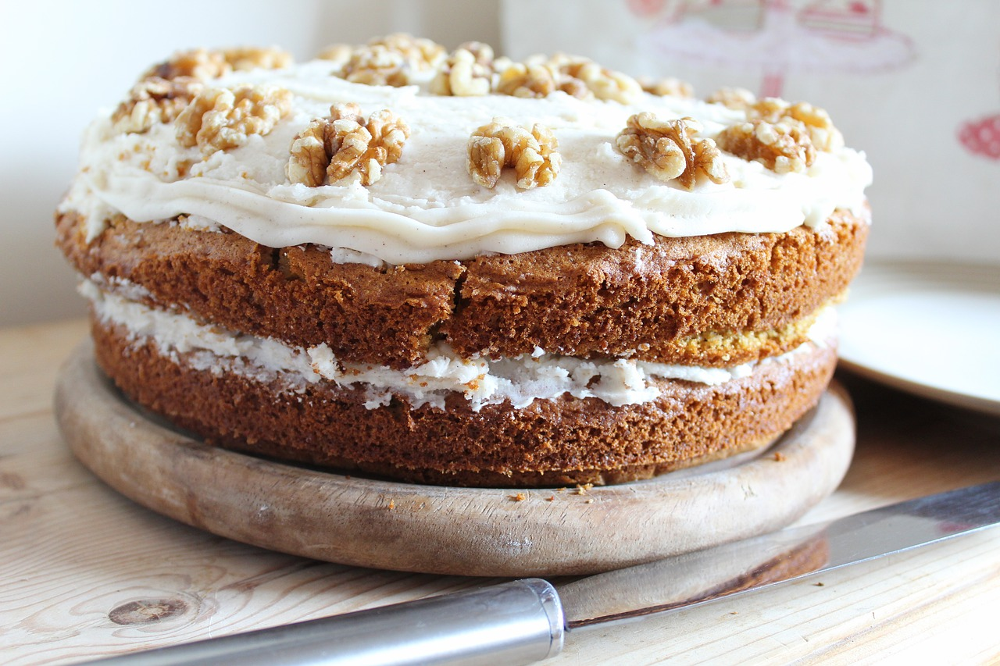

Carrot Cake
Home

Description
A moist, spiced loaf-style cake with grated carrot, walnuts and a tangy cashew-cream frosting.
Ingredients
- 1½ cups all-purpose flour
- ¾ cup brown sugar or jaggery powder
- 1 tsp baking powder
- ½ tsp baking soda
- 1 tsp cinnamon, ¼ tsp nutmeg, ¼ tsp salt
- 1½ cups grated carrot
- ½ cup chopped walnuts (optional: raisins)
- ½ cup neutral oil
- ¾ cup plant milk (soy or oat)
- 1 tbsp lemon juice or apple cider vinegar
- 1 tsp vanilla extract
Steps
- Preheat the oven to 180°C. Grease and line a loaf or 7-inch round tin.
- Stir the plant milk and lemon juice together and let it sit 5 minutes to curdle.
- Whisk in the oil, sugar and vanilla.
- Sift in the flour, baking powder, baking soda, spices and salt. Fold gently until just combined.
- Fold in the carrot and walnuts.
- Pour into the tin and bake 40-45 minutes, until a skewer comes out clean.
- Cool completely. Blend the frosting ingredients until smooth, then spread on top.